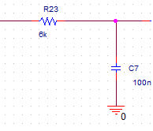

Subject : Try a New PLL
Here we are going to show how you can design your own PLL .As you may know this useful IP is made of a series of OP-AMP witch have a lot of Transistors in it. so it is not an efficient design .
At the below you can find a simple design using simple capacitance an resistance and also Smith Gate in Digital design . Cost and area is really low .So try it.
Subject : Why Analog Design ?

You may have seen lots of Digital Designs among your study ,but it may be wonderful if you know Digital computer will never reach to speed of Anolog computers. These Special Computers are used now all-over the world not in general purposes .
Some fields such as air-plane simulation needs lots of processes per second . suppose that we are going to generate integral of a Signal . Can you describe the process using an FPGA ? It will be really easy if you connect a resistance and a simple capacitance. Below you can find what I am describing :
Subject : Is ASIC Dead ?
Do you know ASIC ? what about FPGA ? If you are not familar with none of them press top-right button as soon as possible. if you are here , so I wish you know both of them . Is ASIC present ? This is the Question.
| CPU Name | Company | Rate |
| Pentium | Intel | 60-200MHz |
| Celeron | Intel | 266MHz-3.6Hz |
| Core i7 | Intel | 3-4GHz |
Subject : My Interests ?
Hello,every body .Here I am looking for my friends witch are trying to rich a variaty of good skills ,useful in Digital design .My list of interests is:
- New Digital Design
- ASSIC & FPGA
- Digital related Analog Design
- Parallel Processing
- Programming
- Showing Others power of Digital